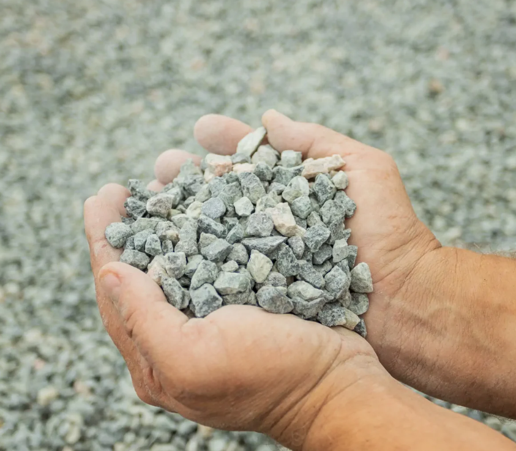
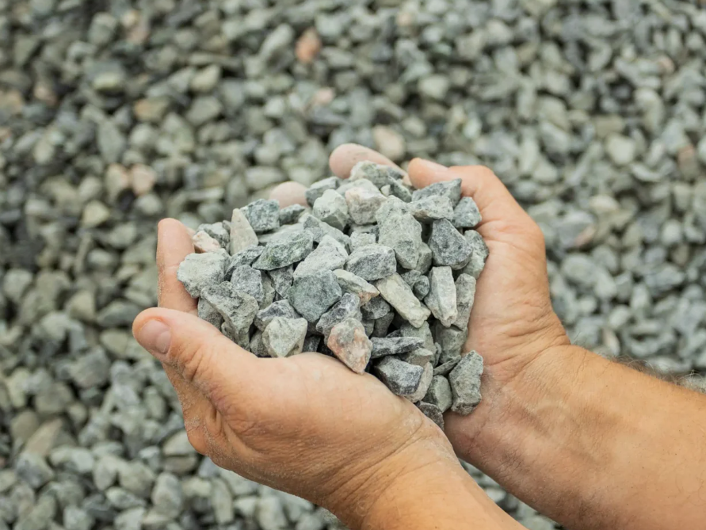
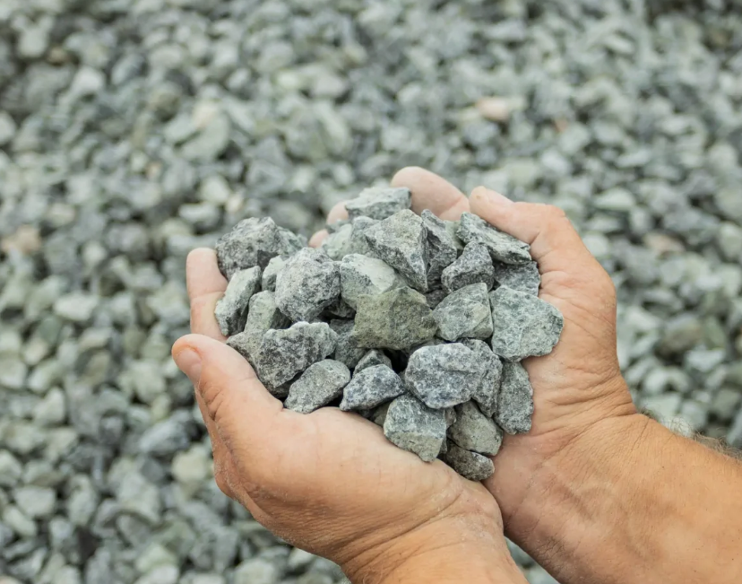
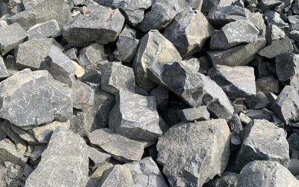
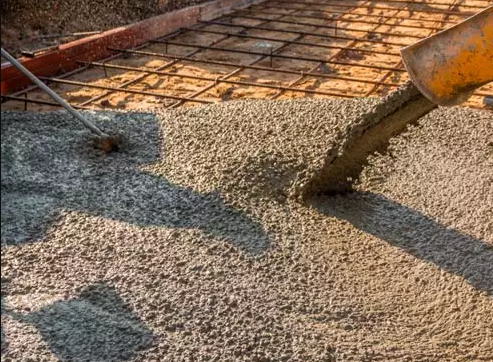
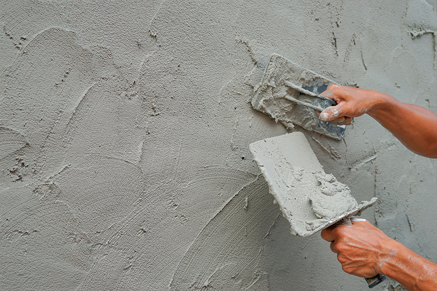

100%
GARANTIA DE QUALIDADE
MAIS DE
30 ANOS DE MERCADO
ENTREGA
RÁPIDA E PONTUAL

Material com granulometria fina. É muito utilizado na fabricação de concreto, blocos e artefatos de cimento. Também é indicada para acabamentos, calçadas e nivelamento de superfícies. Garante boa compactação e excelente preenchimento de espaços.

Com tamanho intermediário, a brita 1 é a mais usada na construção civil. Ideal para produção de concreto estrutural, lajes, vigas e colunas. Também é usada como base estacionamentos, pátios e pavimentações.

Possui granulometria maior e é recomendada para obras que exigem maior resistência, como fundações, drenagens, bases e concretos mais robustos. Também é utilizada em obras de infraestrutura e pavimentação.

Material de maior dimensão, a pedra marroada é indicada para obras de contenção, drenagem, reforço de base e fundações. Muito utilizada em muros de arrimo, enrocamentos e estabilização de terrenos.

Oferece alta resistência, durabilidade e versatilidade, sendo utilizado em estruturas como fundações, pilares, lajes e pisos. Pode ser fornecido conforme a necessidade do projeto.

Utilizada para assentamento de tijolos, blocos e revestimentos. Garante aderência, nivelamento e acabamento de qualidade em paredes, pisos e fachadas.
Fundada em 1993, a BRITAXAN tem suas raízes em Xanxerê e conta com mais de 30 anos de história no setor da construção civil. Ao longo dessa trajetória, construímos nossa reputação com base no que realmente importa: qualidade no produto, pontualidade na entrega e confiança em cada negócio fechado.
Oferecemos uma linha completa de soluções — britas, concreto usinado e argamassa — para atender obras de todos os portes na região, com agilidade e precisão técnica do início ao fim.
Mais do que fornecer materiais, a BRITAXAN é parceira das obras do Oeste Catarinense. Seguimos crescendo com respeito, integridade e compromisso com quem confia no nosso trabalho — porque tradição, pra nós, não é só passado. É o que nos move todos os dias.